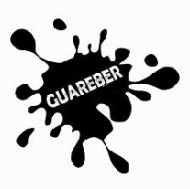

Historia
El nombre Guareber nacio, en las reuniones de un grupo de muchachos que buscaban el emprendimiento de sus carreras, siendo un grupo de hombres poco creativos y dado que elegir un nombre es un proceso tan complejo, uno de los muchachos en medio de risas y mofas de supuestos nombres, quiso escribir "lo que sea" en ingles, y ya que no era un experto en dicha lengua, ese dia se escribio en un pizarron de 2x2 el nombre de "Guareber".
La idea de crear un grupo multidisiplinario surgio gracias al Profesor Nelson, quien junto a un grupo de talentosos estudiantes, se dispuso a fundar una organizacion, donde el estudiante universitario, tenga la oportunidad de sufrir y gozar de los retos del campo laboral, donde se podria organizar equipo que compitan en competencias nacionales e internacionales, que dieran aportes a la sociedad y sobre todas las cosas que crecierancomo profecionales eticos y seres humanos sociables.
